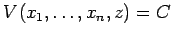
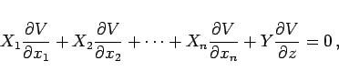

Inhalt Index DeskTop Bronstein

 Differentialgleichungen Partielle Differentialgleichungen Partielle Differentialgleichungen 1. Ordnung Lineare partielle Differentialgleichungen 1. Ordnung
Differentialgleichungen Partielle Differentialgleichungen Partielle Differentialgleichungen 1. Ordnung Lineare partielle Differentialgleichungen 1. Ordnung


Zur Integration der inhomogenen linearen und der quasilinearen partiellen Differentialgleichung (9.68a) wird die Lösung z in der impliziten Form  gesucht. Die Funktion V ist eine Lösung der homogenen linearen Differentialgleichung mit n+1 unabhängigen Veränderlichen
|  | (9.70a) |
deren charakteristisches System
charakteristisches System der ursprünglichen Gleichung (9.68a) genannt wird.